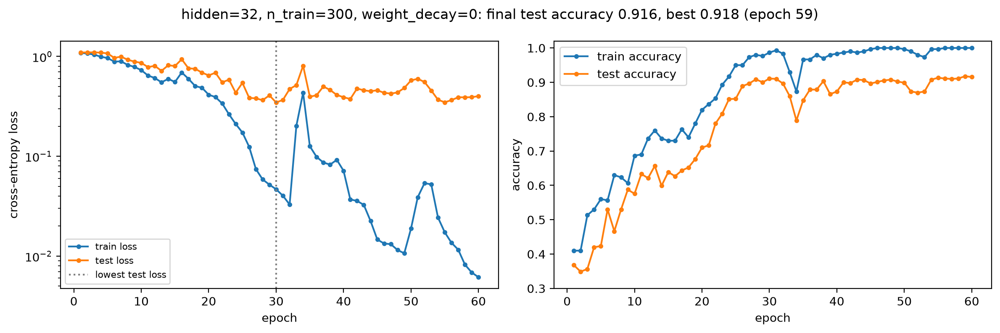

Trained on 300 sequences, training accuracy reaches 1.0 and the test loss is lowest around epoch 30, then drifts up. Early stopping keeps the best point; weight decay helps a little; the learning rate is the first knob to tune.